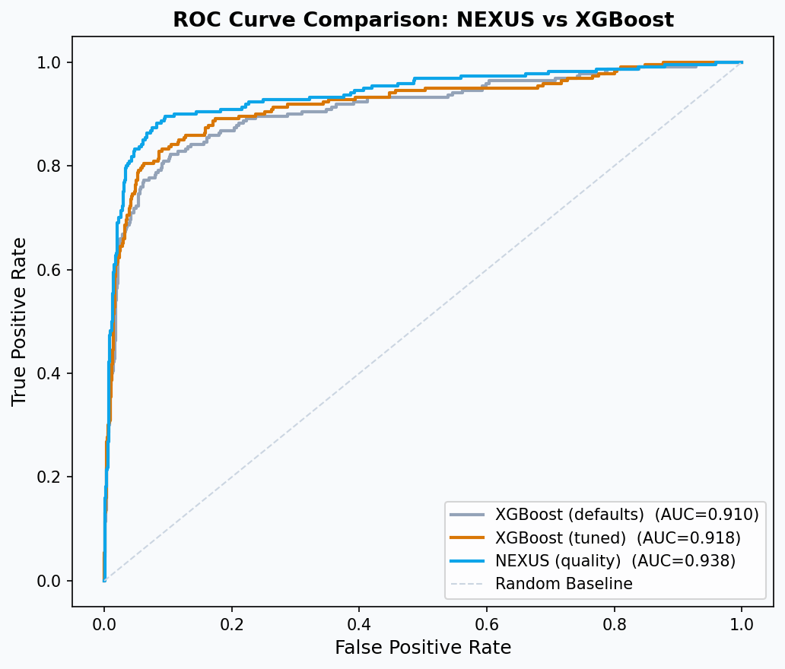

Smarter features,
honest benchmark.
Agenda
Every column. Every table.
NEXUS vs XGBoost, same frame
Three things you'll leave with
Enrich a feature frame with mixed types
Pass categoricals to NEXUS as-is — no encoder. Derive one numeric tenure feature from the date (datetime is the one type NEXUS does not take). Then add cleaning and joins that lift accuracy. NEXUS handles NaNs natively and tolerates light mess in the source.
Join three tables onto one borrower record
Sort by date, drop duplicates, left merge. Financial snapshots, credit assessments, and payment aggregates land as new columns — and move the AUC.
Benchmark NEXUS against tuned XGBoost
Same data, same split, same metric. Compare AUC, preprocessing lines, and tuning time — then read the ROC overlay for the full picture.
From four columns,
to every column.
Strings, nulls, three joined tables — one fit() call. The date? One line of arithmetic.
Mixed types, handled natively.
NEXUS handles mixed-type tables natively. You pass categorical strings as-is — no encoder — and it encodes them automatically. The one exception is datetime: the date becomes a numeric tenure feature with one line of arithmetic. It already understands how features interact and how a missing value differs from a zero.
NEXUS adapts to your data on the fit() call. You hand it the raw frame, and it represents the columns for you — the work you would otherwise spend encoding and imputing is simply not on your plate.
Pass the frame
as-is, and
NEXUS adapts
to your data
No ColumnTransformer. No imputation pipeline. No encoder for the categoricals — one line of date arithmetic, and NEXUS adapts to the frame on fit().
grid-search.
Passed as-is.
NEXUS takes categoricals as-is. You pass Single, Married, and Bachelor's straight through — no encoder. The date is the one exception: account_open_date becomes the numeric account_tenure_days with one line of arithmetic. Cleaning and joins add signal: less feature engineering, not zero.
For the borrower table that means five new feature types join the four numerics from Module 01 — no encoder, no ColumnTransformer.
Five new
feature types,
passed as-is
gender, marital_status, education_level, occupation_sector pass as-is — plus account_tenure_days, derived from the date in one line.
one line for the date, no pipeline.
Three tables. Three signals.
Financial snapshots
monthly_income, income_growth, collateral_score, secondary_income_flag. Latest snapshot per borrower — what their finances look like now.
Credit assessments
Six analyst-scored dimensions of creditworthiness. How underwriters judge the borrower today — a distilled expert signal.
Payment events
total_payments, on_time_rate, avg_payment_usd. Summary stats, not rolling windows — NEXUS learns the pattern from the aggregates.
enrich() — three joins, one frame.
# latest snapshot per borrower, latest assessment, aggregated payments # — each prepared upstream; here we just join them on. def enrich(df): out = df.copy() out = out.merge(snapshots_latest, on="borrower_id", how="left") out = out.merge(assessments_latest, on="borrower_id", how="left") out = out.merge(payment_agg, on="borrower_id", how="left") return out train_enriched = enrich(train_raw) holdout_enriched = enrich(holdout_raw) # missing values from failed joins stay NaN — NEXUS handles them natively. # auto-imputation would bake in assumptions we have not checked.
Three joins, zero pipelines.
Sort by date. drop_duplicates(keep="first"). merge(..., how="left"). Idiomatic pandas, nothing bespoke. NEXUS trains on the result directly — no ColumnTransformer, no fit/transform split, no inference-time preprocessing to reproduce.
Messy data? NEXUS still trains.
We fed the enriched frame to NEXUS without cleanup. Case drift (DIVORCED vs Divorced), typos (Maale, Femle), floats where ints belong. No pipeline, no fix-up.
AUC on the messy frame passed as-is: 0.8611. The model still learns — but case variants and typos eat into the signal.
A light cleanup first — .str.title(), typo fixes, int casts — not imputation, not binning — lifts AUC to 0.9040 (+0.0429). NEXUS reads Divorced and DIVORCED as two categories; consistent casing consolidates them into one.
Clean lightly,
not because
the model
breaks
Standardize casing, fix obvious typos, cast dtypes. Skip imputation, binning, and transformations unless a domain reason says otherwise. You clean for hygiene, not because the pipeline demands it.
not from deep imputation.
Now the benchmark.
Same data. Same split. Same metric.
What XGBoost needs first.
from sklearn.preprocessing import OrdinalEncoder from sklearn.pipeline import Pipeline from sklearn.compose import ColumnTransformer from sklearn.impute import SimpleImputer # column types must be identified by hand cat_cols = ["gender", "marital_status", "education_level", "occupation_sector", "secondary_income_flag"] num_cols = [c for c in features if c not in cat_cols] cat_pipe = Pipeline([ ("impute", SimpleImputer(strategy="most_frequent")), ("encode", OrdinalEncoder(handle_unknown="use_encoded_value", unknown_value=-1)), ]) preprocessor = ColumnTransformer([ ("num", SimpleImputer(strategy="median"), num_cols), ("cat", cat_pipe, cat_cols), ]) # the same 22-column frame NEXUS trained on
Shape the frame, then train.
Before XGBoost ever sees a row: identify numeric and categorical columns by hand, impute strategies that are implicit domain choices, ordinal-encode strings with an unknown-value guard. None of this goes away at inference — it has to be reproduced on every new request.
Same frame. Different ceremony.
Both models train on the identical 22-column frame — the cleaned categoricals plus the numeric account_tenure_days feature derived in Part 1. Nothing is hidden from either side of the benchmark.
The asymmetry is what each model demands first. NEXUS took the frame as-is. XGBoost needed the encode-and-impute pipeline on the previous slide — and every line of it has to run again, identically, on every inference request.
The pipeline is
code you own
forever
NEXUS has no encoder to version, test, or reproduce at inference. XGBoost's preprocessing is yours to maintain — one unseen category value or imputation drift at inference, and the model degrades quietly.
at NEXUS inference time.
Three models. One honest table.
XGBoost (defaults) is the baseline — ~30 lines of preprocessing, no tuning, typical AUC around 0.91. XGBoost (tuned) adds a GridSearchCV pass — ~0.92, a small bump for meaningful wall-clock cost. NEXUS (quality) lands around 0.94 on the same frame, no encoding and no tuning.
On raw, cleaned data NEXUS leads. Give XGBoost the same feature engineering and the gap narrows — NEXUS's edge is largest before the feature work. AUC is one dimension; preprocessing lines, tuning time, and the inference pipeline belong in the same sentence as the number. The next slide shows the curves.
The code you
did not write
counts too
XGBoost preprocessing breaks on new category values at inference. Grid search scales badly with dataset size. NEXUS needs no grid search and carries a far smaller preprocessing surface.
raw data — gap narrows with
equal feature engineering.
The overlay.

The gap is
consistent across
the whole
threshold range
NEXUS sits above XGBoost at nearly every operating point — not just the one the AUC summary captures. That matters in credit risk, where you often operate at low false-positive rates and the curve there decides ship-or-not.
from your notebook run.
Overlay
the ROCs.
Defend
your pick.
Train three candidates on the same enriched frame.
Pick the model you would ship — and say why.
Run the XGBoost defaults cell. Note AUC and wall-clock time.
Run the GridSearchCV cell. While it runs, count the preprocessing lines NEXUS did not need.
Generate the overlaid ROC chart. Compare the three curves visually — not just by AUC.
In one sentence: which model ships, and what you traded to pick it. Paste into the notebook's Your call cell.
Three takeaways
Mixed types, passed as-is
NEXUS takes categoricals as-is — no encoder, no ColumnTransformer, no imputation. The date becomes one numeric tenure feature. Cleaning and joins are additive: less feature engineering, not zero.
Joins move the AUC
Financial snapshots, credit assessments, payment aggregates. Three left merges on borrower_id — each adds a column worth training on.
The benchmark is honest
AUC is one dimension. Preprocessing lines, tuning time, and features silently excluded belong in the same comparison.